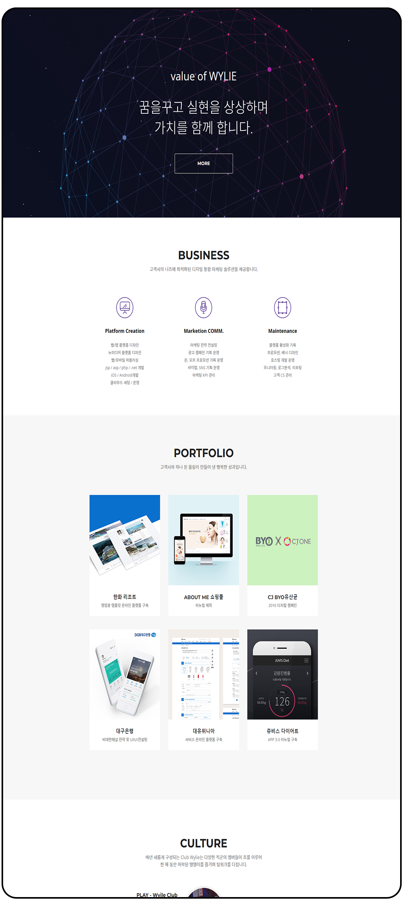
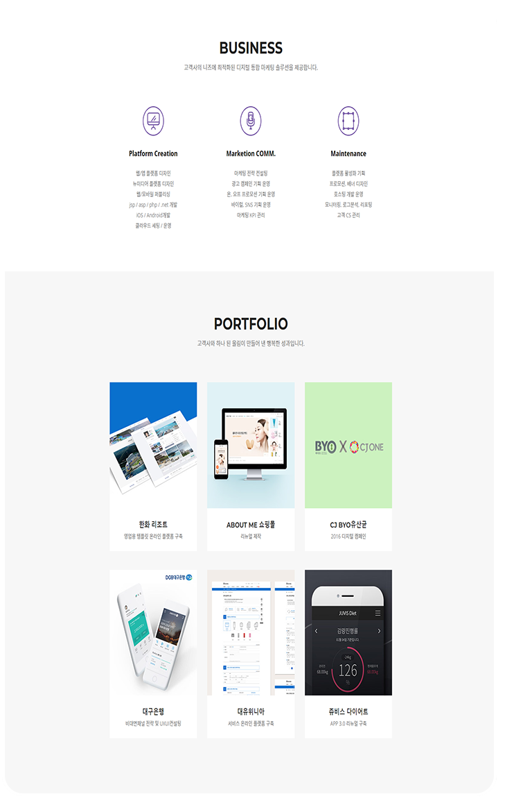
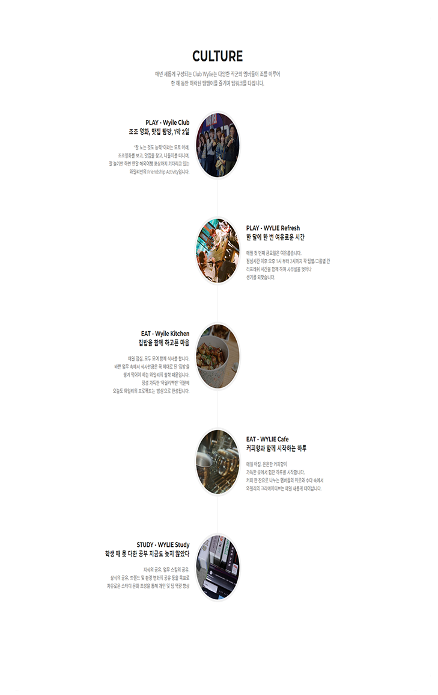
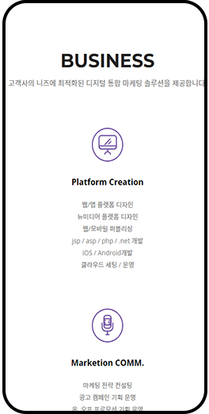
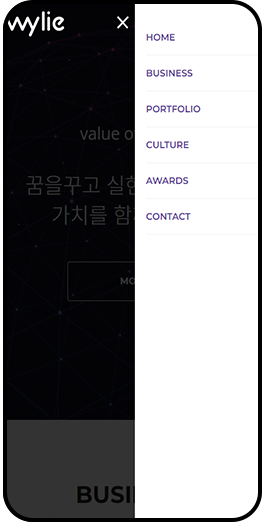
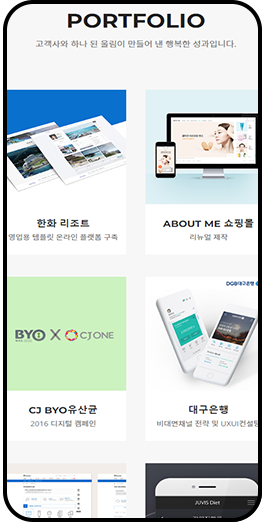
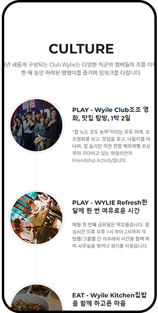
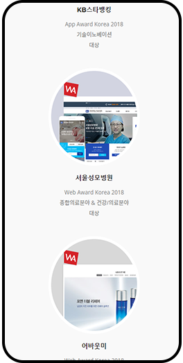
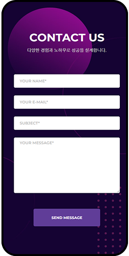

닫기
WYLIE
prev
next

글로벌 가이드라인을 지키며 콘텐츠의 배치로 차별성을 주었습니다.
#bbadd2
#603d98
#f7f7f7
#FFFFFF
Value of Wylie WYLIE
Wylie
- 프로젝트명
- Wylie 웹사이트 리뉴얼
- 제작방식
- HTML + CSS + jQuery + 반응형 구축
기사의 다양한 형태와 엘리먼트
한 가지 형태가 아닌 기사의 스타일에 맞는 UI로 기사의 색깔이 명확하게 드러나도록 했습니다.
각 페이지에 엘리먼트를 사용하여 에디터가 편집에 들어가는 시간이 적어지게끔 폰트의 사이즈, 간격, 형태를 맞추었습니다.
기사 작성 시 번거로운 편집을 거치지 않아도 되게끔 편리함을 주었습니다.

SIMPLE
일반 이미지
구매 엘리먼트
이미지 슬라이드 엘리먼트

FEELING THE FLOW
화보
GNB의 집중도 분리
비중이 적은 페이지는 전체메뉴에 넣어 GNB는 필요한 정보만 보일 수 있도록 했습니다.글로벌 가이드라인을 지키며 콘텐츠의 배치로 차별성을 주었습니다.
메인 헤더
Font&Color
Pretendard
BoldㆍSemiboldㆍMediumㆍRegularWYLIE
01
02
04
03
모바일에서의 최적화
늘어나는 모바일 사용자를 위한 모바일 페이지 입니다.





